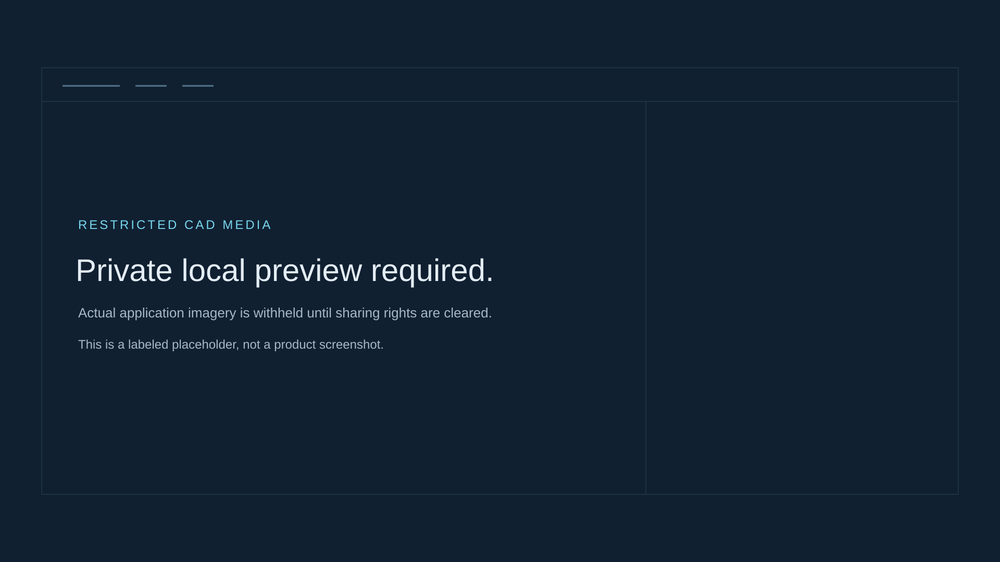

Identify the occurrence
Repeated parts and temporary references make a name or part number insufficient.
Identity + configurationEvidence-Grounded AI for CAD Design Review
A SOLIDWORKS-native AI assistant that connects engineering change detection, rule validation, local LLM reasoning, and 3D component navigation.

Public-safe preview. Restricted CAD footage is excluded by default.
01 / THE ENGINEERING PROBLEM
Review requires a chain of evidence: which occurrence changed, what can be known, and where it lives in the assembly.
Repeated parts and temporary references make a name or part number insufficient.
Identity + configurationSuppression and cached properties affect completeness. Missing data is not a confirmed removal.
Known ≠ assumedCheck independently supplied requirements, then connect the finding to the actual 3D component.
Independent rules + native context02 / END-TO-END WORKFLOW
Five implemented capabilities.
One evidence-linked review workflow.
Read the actual selected component, referenced document and cached custom properties alongside the native model.
Custom material properties do not establish SOLIDWORKS Physical Material.
03 / ACTUAL APPLICATION FOOTAGE
A 42-second edited feature highlight.
Real UI. Real tools. Real native focus.
Public sharing rights are not yet cleared.
No substitute product footage is shown.
Video withheld in public-safe mode.
Edited from the preserved 79.9-second continuous recording. Cuts, enlarged crops and editorial callouts improve readability; they do not add CAD changes or replace model output. Silent, 10 fps source and export. On small screens, use the player's full-screen control to read source details.
Full original · private media unavailable04 / SYSTEM ARCHITECTURE
The model explains bounded observations. It does not decide what changed, invent requirements, or edit CAD.
Active document + occurrences
Bounded, cached observations
Snapshots, independent BOM/rules
Context-bound source handles
Five typed, bounded functions
Structured calls + cited explanation
Review evidence beside the model
Native reads/navigation are dispatched to the owning thread. Managed processing, disk I/O and HTTP run asynchronously with cancellation and stale-context guards.
Revision and validation can have different capture IDs. Explanations preserve provenance; they do not imply an atomic live CAD state.
get_active_document, get_selected_component, get_assembly_structure, get_revision_changes, get_validation_findings.
Loopback Ollama is configurable. Backend use and CAD-metadata sharing require opt-in. Deterministic review remains available offline.
05 / MEASURED EVIDENCE
Exact denominators, distinct populations. No combined “CAD accuracy” score.
Managed native fixtures plus real .NET COM callback checks.
Real standalone browser. Synthetic CAD and model inputs.
Exact deterministic findings, identity decisions and rejections.
REAL LOCAL INFERENCE / SYNTHETIC MANAGED CAD HOST
Phase 6A.1 retained runs. One stochastic run per set; failures remain included.
| Measure | Original | Holdout |
|---|---|---|
| Strict tool selection | 21/22 | 12/12 |
| Valid structured calls | 23/24 | 13/14 |
| Completion | 21/22 | 11/12 |
| Issued citations, applicable answers | 4/4 | 3/3 |
Native observation: the actual SOLIDWORKS workflow is recorded. This is not completion of all 12 formal native acceptance scenarios.
Human semantic review remains pending. Synthetic checks are not industrial CAD accuracy. Test-rule PASS is not engineering approval.
06 / ENGINEERING CHALLENGES
Combine assembly lineage, native references and qualified hierarchy/configuration evidence. Preserve original observations; withhold ambiguous pairings.
Separate known suppression from unavailable properties. Distinguish FAIL from INCONCLUSIVE. Keep independently authored requirements separate from observed CAD.
Issue context-bound evidence handles, reject forged/stale links, verify current native identity and check selection/camera postconditions.
07 / PROJECT RESOURCES
Local review materials.
No repository or installer has been published.